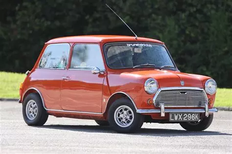
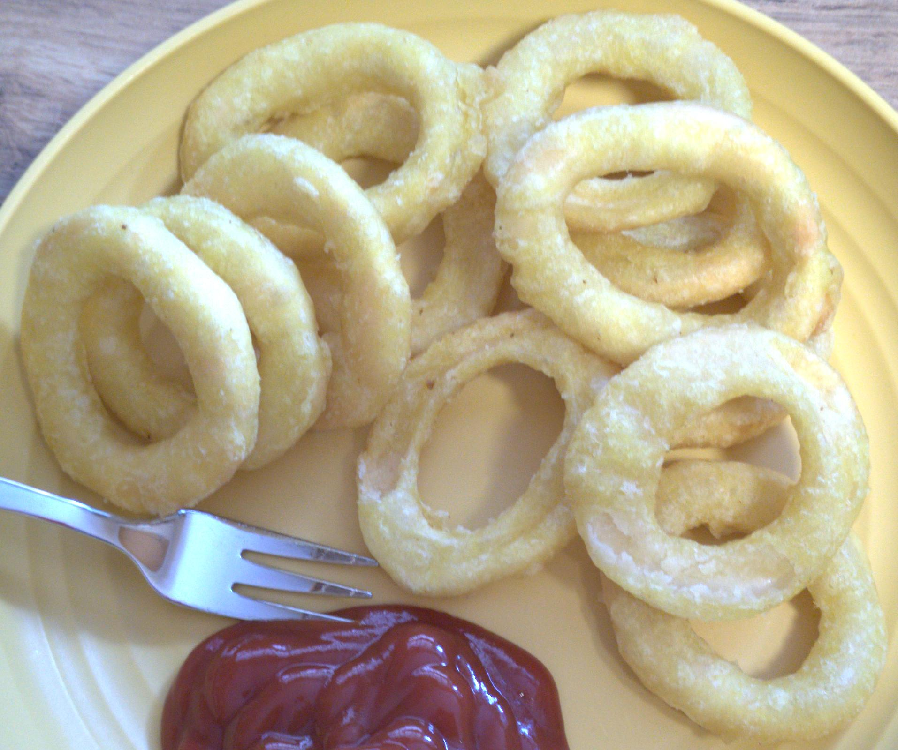
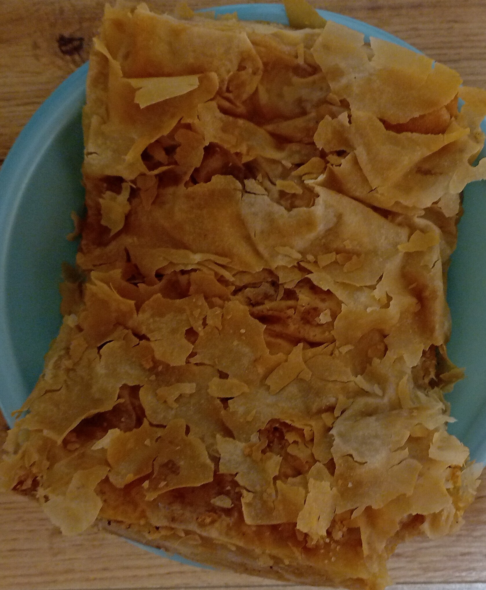
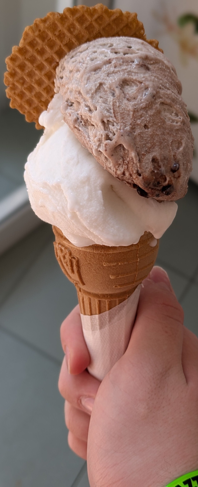
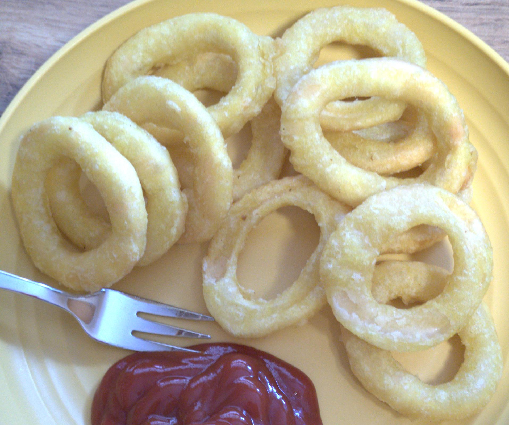
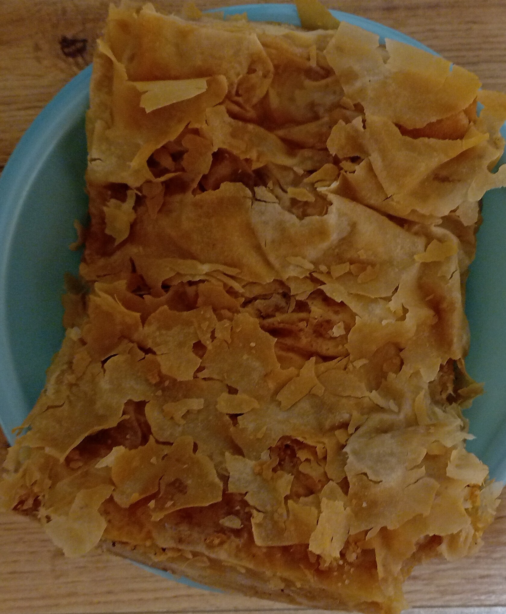
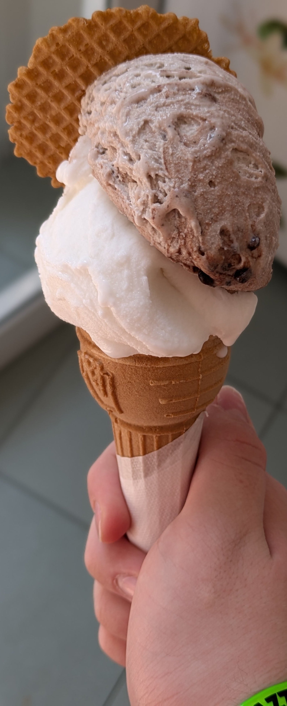
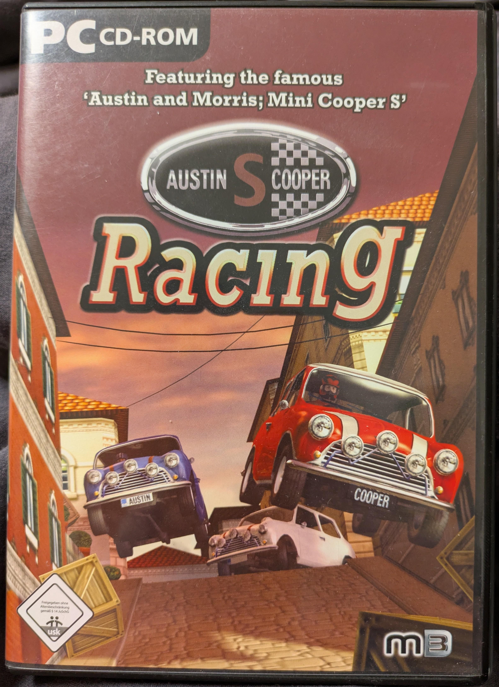
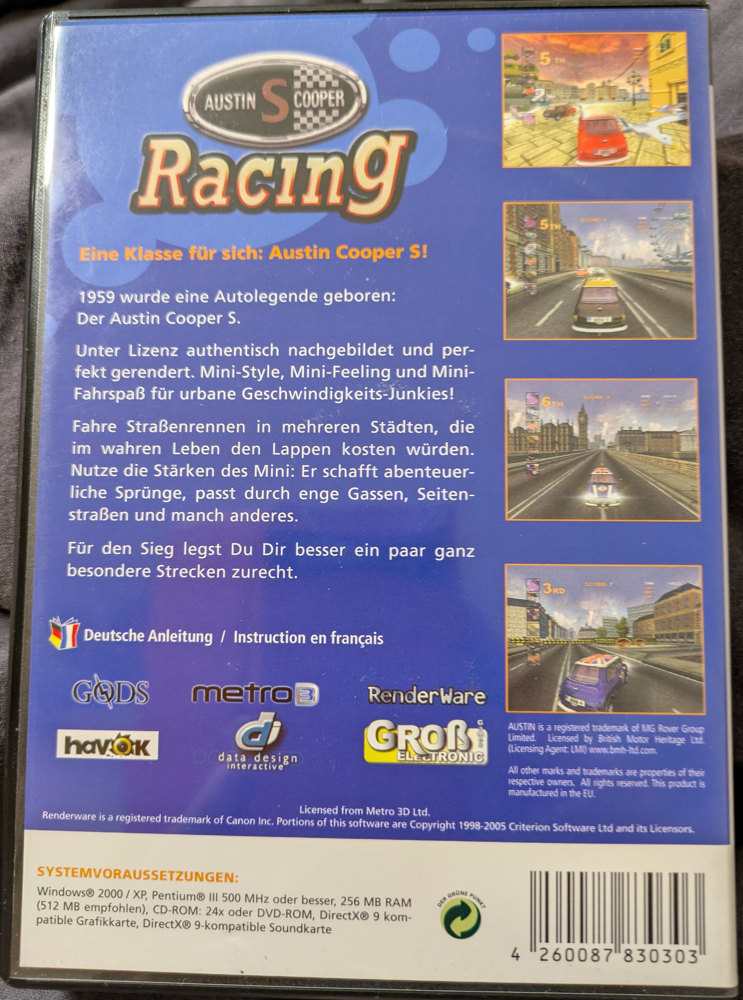
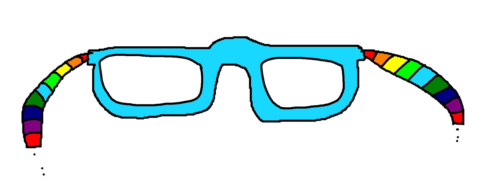

Roles:
Founder and Owner of Trafkhop Entertainment!
Lead Game-Developer/Game-Designer/Artist/Sounddesigner/3D-Modeler/etc at Trafkhop Entertainment
Sole Lore, Story and Gameidea Writer of Trafkhop Entertainment!
Founder and Owner of Trafkhop Entertainment!
Lead Game-Developer/Game-Designer/Artist/Sounddesigner/3D-Modeler/etc at Trafkhop Entertainment
Sole Lore, Story and Gameidea Writer of Trafkhop Entertainment!
Degree* at the HTL-Steyr, Branch: Information Technology and Network Engineering
Good HTML
Basic CSS
Very Basic C
No GD-Script
Basic Blender Knowlage
Mid Video Editing Skills
Bad Drawing Skills
Basic FL-Studio Knowlage
Mid Scratch Knowlage
Basicly no Godot Game Engine Knowlage
3. HoppiTex
Herkunft/Bedeutung: HoppiTex (Seit ~1.1.2026)(eigentlich seit 31.12.2025 15:37 aber naja, 1.1.26): Wollte wegen nem neuen Minecraft Account(da der alte auf der alten rabsi@aon.at Email war und diese nicht mehr zum einloggen ging und das Microsoft Konto dazu ebenfalls verbuggt war, man konnte nur Email verifikation benutzen, alles andere gab falsch aus, auch wenn man strg c v 't.) mir nen neuen Gamertag zulegen und dachte 2 Tagelang nach, bis ich dann endlich auf diesen gekommen bin(war eig. der 1. den ich mir ausgedacht hab. Die anderen waren: Hopptex, Hoppikeisa, Hoppikisa). Bedeutungen: Hoppi: Hüpfen/Bewegung (in andere Welten) Schnelligkeit (Hase, Grashüpfer, meine eigene alte. Verbindung zu meinem Studio (Gründer-Signatur) Tex: Stärke (T-Rex Power) Intelligenz (Dinos waren tatsächlich cleverer als ihr Ruf) Purer Sound-Faktor (das X macht's einfach cool, wie bei Xylofon)
2. Raufbold3b
Herkunft/Bedeutung: Raufbold3b(von der 3.Klasse(anfang mitte november?) bis 31.12.2025): Ich war in der 3b(Volkschule) und wurde gemobbt. In ner Einheit, wo ich aus dem Fenster schaute, fiel mir das Wort Raufbold als bezeichnung dieser Typen ein(hatte gedacht ich hätte das Wort erfunden, fand aber schnell heraus, nein hab ich nicht). Hab dan schnell die 2 Zusammengefügt und woulah, ich hatte meinen Gamertag, den ich bis zum 31.12.2025 hatte.
1. Ullidani
Herkunft/Bedeutung: Ullidani(die 1. Namen, nicht von mir): Ulrike x Daniel (Mama x Kind Name)
1.: DaniPapa
Herkunft/Bedeutung: Danipapa(die 1. Namen, nicht von mir): ist wohl selbstverständlich was es sein soll.
Carrot Orange: #ed9121
Austin Mini Cooper S 1275
Icon Bronco


 





Gamedev, so: programming, 3D modeling, animating, composing, writing, etc.
Video Cutting
Gaming
Skiing
table tennis
sledding
RC Cars/plains
Kite flying
Robbi, Tobbi und das FliWaTüt (1972)
Lego Ninjago: Masters of Spinjitsu
Augsburger Puppenkiste(Schlupp vom grünen Stern, Jim Knopf und Lukas der Lokomotiv Führer, Die Oppodeldoks, Hilde Teddy Puppi, Beppo und Beppi, Der Löwe ist los, etc
Die ???
Oh wie schön ist Panama
Das Dorf
The Super Mario Brothers Super Show
Ducktales (1987)
Detective Conan
Die Maus auf dem Mars
5
Year: 2015
Season: Winter
Month: February/March/September
Day: Thursday
Time: 11:31

Austin Cooper S Racing
 Human Fall Flat
Stick Fight The Game
Minecraft
Mario Kart 8 Deluxe
Windscape
No Man's Sky
Doshin The Giant
Mario Kart Super Circuit
Animal Crossing New Leaf
Lego City Undercover / Lego City Undercover the Chase begins
Slime Rancher
Live Slide
Freaky Forms Deluxe: Your Creatures, Alive!
Combat of Giants: Dinosours
Chibi Robo GC
CUBIVORE SURVIVAL OF THE FITTEST
Gaming: 5600h + 8500h(Minecraft) = 14100h
Development: ~100h
new:

old:
Arch Linux (I USE ARCH BTW)
![raubo@RaubosDesktop OS: Arch Linux x86_64 Host: MS-7C91 (1.0) Kernel: Linux 6.18.6-arch1-1 Uptime: 1 hour, 34 mins Packages: 1457 (pacman), 11 (flatpak) Shell: bash 5.3.9 Display (BenQ EX2710S): 1920x1080 in 27, 165 Hz [External, HDR] DE: KDE Plasma 6.5.5 WM: KWin (Wayland) WM Theme: Breeze Theme: Breeze (KlassischMeins) [Qt], Breeze [GTK2/3] Icons: breeze [Qt], breeze [GTK2/3/4] Font: Noto Sans (10pt) [Qt], Noto Sans (10pt) [GTK2/3/4] Cursor: Breeze_Light (24px) Terminal: konsole 25.12.1 CPU: AMD Ryzen 7 5700X (16) @ 4.67 GHz GPU: NVIDIA GeForce RTX 2060 [Discrete] Memory: 11.14 GiB / 62.72 GiB (18%) Swap: 2.25 MiB / 4.00 GiB (0%) Disk (/): 1.55 TiB / 1.79 TiB (87%) - ext4 Disk (/run/media/raubo/Raubos HDD2): 3.53 TiB / 7.22 TiB (49%) - ext4 Local IP (enp42s0): 10.0.0.10/24 Locale: de_AT.UTF-8](hoppitex/fastfetch.png)
Mainly only consuming media. If anything, than uploading a bunch of Mario Maker 2 Levels at launch.
Creating a bunch of Scratch Games and starting his Youtube Channel.
Founded Trafkhop Entertainment, made his youtube Channel more of a Playthrough Archive and thought a lot about LORE.
Created Raufbold3v Channel in Italy in July/August 2021
Uploaded 3 Episodes of the mobile game: myUniverse
Deleted Channel
Created Raufbold3b Channel again and the rest ist on his Channel
yay: sudo pacman -S --needed base-devel git git clone https://aur.archlinux.org/yay.git cd yay makepkg -si Normal Apps: YAY: yay -S joplin-desktop yay -S itch-bin yay -S heroic-games-launcher-bin yay -S bottles (bis dahin installiert!) yay -S renpy-git yay -S asunder yay -S hakuneko-desktop-bin yay -S makemkv yay -S koofr-desktop-bin yay -S opentabletdriver yay -S peazip-gtk2-bin yay -S Mailspring yay -S bambustudio-bin yay- S jetbrains-toolbox yay -S freeoffice yay- S neofetch pacman: waydroid discord steam kdenlive obs-studio helvum wine winetricks wine-staging wine-gecko audacity gimp kolourpaint handbrake qbittorrent timeshift virtualbox openrgb vlc ollama qalculate-qt vivaldi cmatrix fastfetch libreoffice-fresh libreoffice-fresh-de packages: python python-pip cmake flatpak mangohud lib32-mangohud vlc-plugins-all yay -S webkitgtk2 non steam/itchio games: yay games und so: yay -S openttd yay -S supertuxkart-git yay -S cubyz-bin yay -S prismlauncher yay -S airshipper yay -S srb2 yay -S srb2kart yay -S hytale-launcher-bin flatpak install flathub org.vinegarhq.Sober flatpak install flathub org.vinegarhq.Vinegar MCPE: 1. Add Flathub repository: flatpak remote-add --if-not-exists flathub https://dl.flathub.org/repo/flathub.flatpakrepo 2. Install io.mrarm.mcpelauncher application or runtime: flatpak install flathub io.mrarm.mcpelauncher 3. Run io.mrarm.mcpelauncher application: flatpak run io.mrarm.mcpelauncher Emulators: yay -S lsfg-vk-git yay -S stella yay -S xemu yay -S xenia-edge-bin yay -S lime3ds (mithilfe des txts!!!) yay -S parallel-launcher yay -S cemu yay -S dolphin-emu-git yay -S mesen yay -S mgba-qt-git yay -S bsnes-hd yay -S melonds yay -S vita3k-git yay -S rpcs3-bin yay -S ppsspp-git yay -S pcsx2-git yay -S duckstation-preview-latest-bin yay -S shadps4-qtlauncher-bin yay -S kega-fusion yay -S flycast-git yay -S virtualboy emulator search! Sims 4: https://leuan.zeroauno.com/sims4-toolkit/download.html https://www.youtube.com/watch?v=GeTuyL89JOM DVD und HDD Spiele (lokal auf hdd vorhanden) fl studio crack (lokal auf hdd vorhanden) sudo pacman -Syu yay -Syu flatpak update sudo pacman -S tailscale yay -S trayscale Jellyfin x Docker: sudo pacman -S docker yay -S jellyfin-server-git
The Guy uses Light Mode WITH 100% BRIGHTNESS AND WITH HDR!!!